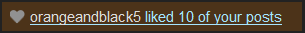

1239
King with unlimited uses of decide fate

1240

orangeandblack special<3 (Passive) - You will always know who is infected. You are immune to death once are immune to all forms of delayed death. If a player likes more than 6 of your posts in a day, then they will automatically become infected. If you are jailed, you will automatically infect the jailor, and the jailor will infect everyone they jail.
Made in Abyss (Passive) - When everyone alive is infected, you will turn into the King of Hearts and an announcement will be made that “The King of Hearts has risen from the Abyss to deliver cat girls and justice!” the day after everyone is infected
Keen Eye (Day) - Learn if your target can visit. If they can’t, then they will automatically receive the infected status at the end of tonight. [Infinite, 1 day cooldown]
Like Post (Night) - Like a player’s post, infecting them and all their visitors. Infected people will spread the infection to all visits and visitors as well. [Infinite]
Your goal is to win as the King of Hearts.
King of Hearts
orangeandblack special</3 (Passive) - You are immune to all forms of death, occupation, and redirection. If you are jailed, you will still be able to use your action and cannot die to the prince’s execution, attacking him at the end of the night. Additionally, you secretly have 2 votes.
Secretly A Weeb (Passive) - You will always be investigated as a BD class of your choice unless they have an anime class, in which case they will be occupied.
Burning Bridges and Logbooks (Day) - Target 2 people. If they die tonight, you may choose what they flip as and what their logbook says. [2 Uses, 1 day cooldown]
Like Post (Night) - Kill a player and their visitors, bypassing everything. [Infinite]
Your goal is to defeat the main factions and any neutrals that stand in your way.
Max wtf
That coloring is literally unreadable
And the role is even worse
1241
Villager
Unwanted Guest
I wanna play too but you closed the sign ups REEEEEEEEEEEE
You don’t have any abilities, but you’re pissed as fuck that you were eating spaghetti while sign-ups were open. Convince people that you’re in the game and you win, gg
(Salt is strong, oh btw, you might be able to roll this class as a latecomer to a turbo, who knows?)
getting some mafiascum ones:
You are Wisdom of the One.
During the day, target a player.
Target player will be force replaced.
Elephant
Each night, target a player. You will begin a stampede in that player’s direction. In the game thread it will be notified in the night “a stampede has begun charging toward _______, would you like to join?” If three or more players agree to join your stampede before the end of the night phase deadline, you kill that player. Otherwise, you visit that player with no effect.
Necromancer (Ghost Faction)
Passive -
Seer (Ghost Faction)
Passive -
Town 8-Ball
As long as you are alive, the game is nightless
Town 8-ball (less broken)
Reroll until you get another town role. This player is that role and receives that role PM, but secretly is an 8-ball in addition to that. It’s publicly revealed that there’s an 8-ball, and all anti-town players know who it is. The game is nightless while the 8-ball is alive.
Town 8-Ball (broken to pieces)
During the first twilight phase, choose two players. You and any of the players you’ve chosen who are town become pieces of the 8-ball (you are not told how many of the players you’ve chosen are town, but anyone who becomes a “piece” is notified and linked to this post). As long as any of you are alive, the game remains nightless.
You are the Bad at Mafia Ruleset.
During the day, target a player.
If that player is due for replacement due to inactivity, or the slot has ever been replaced for flaking, you will kill them.
However, if you ever require replacement for ANY reason (including non-activity-based reasons), you will instead be modkilled.
Kidnapper (Ghost)
Passive -
Real Time Serial Killer
You perform one kill every 7 days in realtime, regardless of whether the game is in a day phase or night phase (or even twilight). You don’t have a regular nightkill.
You need to inform the moderator of your kill target prior to the time at which the kill will be performed, or you may end up missing it.
Keeper
Passive -
Town Scatterbrained Professor
As long as this role is alive, every living player’s role (including alignment) is shuffled before each night phase. Players are notified of this before any night actions are submitted
Warden (Ghost)
Passive -
Reroll, alignments reversed
Ghost King (a king allied to the Ghosts faction)
Passive -
 ) _
) _Acolyte (Ghost follower? )
Passive -
A random role posted by the same person as the previously rolled role
Town confused Tracker Watcher
Investigate a player each Night. You’ll be given a list of everyone who visited him or who they visited, but you won’t know which.
The Duelist
Unseen Killer
Duel (Night Ability) - Attack a player, but force them to attack you also unless they are occupied. This is in addition to their normal night ability, and they are not notified. (Infinite uses)
Rebound (Night Ability) - Attack a player who has helped vote an Unseen player up to the stand, but didn’t vote execute. (2 uses)
A duplicate of a random role existing elsewhere in the setup, but with alignment reversed
TOWN:
16 Year old
Day 1 you can’t Vote; You can drive a car though. Once during day 1 you can Drive away, and you won’t be an eligible lynch target for the remainder of the day. You won’t be able to post in thread though if you do this.
Night 1 you turn 17: You’re now the legal age of consent. You gain 1-shot propose, usuable anytime. You choose 1 person to propose to, and if they accept you learn everything about them (1 way confirmed alignment/neighborhood)
Day 2 – you turn 18 and can vote;
Night 2; You can join the military or go to College: If you join the military you become a vigilante; If you go to college,you gain college debt.
Day 3 – you are now 20;
Night 3 --You are now 21; If you went to college you gain a medical degree - in order to pay for college you had to borrow from a shady looking gentleman. You will protect a random mafia member from killing and investigation tonight. From now om during any night phase you can leave the military giving up your vigilante ability permanently to go to College.
Day 4 — From now on - if you’re attending college after leaving the military you may try to get a job as a police officer, by getting somebody in thread to say “You are hired” or “You’re hired”.
Night 4 — If you have a medical degree, you are now just a regular doctor- You may protect one person from 1 kill each night. If you got a job as a police officer you now have a criminal Justice degree and can investigate one person each night getting a result of ‘Guilty’ or ‘Not Guilty’
Vanilla Werewolf, except…
Once you’ve finished generating the setup, shuffle all the alignments between all the players (i.e. breaking the link between role and alignment). This role ends up as a vanilla of whatever alignment got shuffled into it. The players aren’t told how their roles were generated (so this player will think they just rolled a vanilla role).
Poltergeist Shuffler
Alignment notes:
Only one role with Poltergeist in the name can exist in a game. If multiple are rolled, one is selected randomly to remain and all others become Vanilla Townies. If this is rolled, after the setup generates, this role may pick a number of players to add to their faction, with a maximum faction size of 20% of the playerlist, rounded down. Any players recruited get their alignment changed to Ghoul. If there are already Ghoul aligned roles, the amount of recruits available with be reduced by that number. Any extra Ghouls past the allowed number will become town versions of whatever they are (So a Ghoul Tracker would become a Town Tracker). This faction has no nightkill but has a one-shot ability to select any dead member of their faction to possess any living player. The living player now counts towards the Ghouls’ numbers and the dead Ghoul possessing the player has control over that player’s night actions. The possessed player may still post and vote as normal however.
The Ghoul faction wins when 50% of alive players are of the Ghoul faction.
Role notes:
Randomizes all roles of a certain type across their group (active night actions switch, night passives switch, votemodifiers switch, etc). Players receive their original role but have the functionality of their new role.
Town 1-Shot Abortionist
When a player is to be replaced in the game, the moderator will post in the game thread that the player is being replaced, and then will contact you privately via PM and give you the option to terminate the slot. If you choose to terminate, the mod will post in the game thread that a replacement player was aborted before entering the game. If you do not choose to terminate, the moderator will seek a replacement.
I misread “Town Aborist” on the last page and then I had to get this out of my head…
I guess this is what… A 1-shot replacement dayvig?
Enough with these fancy re-rolls already.
This is not a role. If this is rolled, do not execute any special effects from re-rolls from now on
You’re done
Stop rolling roles. You’re done. You don’t get to add any more roles to your game, even if there are slots without roles still. Figure it out.
Rival
Once during the game, you may neighborize a player. This action cannot be blocked or redirected by any means. The player you have neighborized is not informed of the nature of the neighborhood, but you win if this person loses. If it becomes impossible for them to win, you exit the game in a win. If you die before you can neighborize anyone, you exit the game in a loss.
Unconvertable Miller Almighty Survivor
This fella is down on their luck. They’re suspicious by nature, nobody wants them around on their team, and they got no protection from anyone. They only are looking out for themselves.
Wincon: survive until endgame. If this happens, nobody else wins, even if they preformed their wincon as well.
Abilities:
Miller: come up as the worst possible outcome to investigative roles, even to the Mafia/Werewolf/Cult. For example, a Mafia Rolecop would see them as a Serial Killer or a Macho Cop, depending on what the Mod sees as a horrible role to be seen as.
Unconvertable: their wincon and role cannot be changed by any means, but being neighborized is still an option as it is just an additional ability and not a true role change.
Almighty: your wincon takes priority over other wincons, meaning if you are successful, only you win. This even overrides a Jester or a Lyncher victory.
Mafia Traitor Backup Vigilante
The Mafia do not know you exist and you do not know who they are. If the Mafia is entirely wiped out, you inherit the factional nightkill.
The player who rolled this slot will join any groupscum faction (mafia, werewolves, aliens, pirates, cult, etc.) that already has a member. if there are 3 or less living members of your faction and you are lynched, your faction automatically loses.
Reroll this slot to determine their class.
Town Neighbouriser, but…
If at any point your neighbourhood consists of all living players, you win. Alternatively, you also win if the town wins. Alignment investigations will see you as town, but investigations that specifically detect third parties will see you as third party.
Werewolf Traffic Analyst
A Traffic Analyst is a role that is capable of checking to see whether a player can privately communicate. As an informative role, its night choice is to choose a player, and the analyst will learn whether or not there are any players that that player can legally communicate with outside the game thread. (The identity of the people that the target can communicate with is not learned, nor is the content of the communications.)
Note that merely having access to a private topic is not necessarily enough to be able to communicate; there will have to be a second living player in the private topic in question to communicate with. In general, the role will give a “can communicate” result on a player who shares a private topic with another living player, and also on a Mailman; and a “cannot communicate” result on anyone else.
Town Ballot Analyzer
Can check the currently active wagons (this just requires one vote to be in a person) and determine how many are on scum.
Alien Surrealist
As long as this role is alive, all night action results are replaced with random animal names. Each night action result will consistently be one animal name each time that result occurs in game, so players may eventually figure out that, for example, “elephant” means “no result”.
Town super doctor
If this role exists at the start of the game, all other town roles become “town doctor”
Town Arborist
Each night, choose a player. If that player would die overnight, they become treestumped instead (i.e. they count as dead for almost all game purposes, but are allowed to post in the game thread).
Reroll, but change the alignment of the resulting roll to Werewolf
Town Janitor Vigilante
You’re a full Vigilante, but any time you kill someone, they won’t flip (i.e. their death will be no-reveal, and you won’t learn the alignment of the player you just killed).
Desperate Townie
You can win with the town. Additionally, if a member of the Mafia (specifically) is lynched on Day 3, you automatically win and leave the game, regardless of whether town ends up winning or not.
Mafia Orange Laser Goon
Kill flavour is “killed using an orange laser”. Otherwise identical to a regular Mafia Goon.
Town Scapegoat
Whenever a player dies overnight, if you are alive, the kill flavour will (most likely incorrectly) specify that you killed them (e.g. a player might flip as “Mafia Goon, shot by your name”).
Reroll until you get a role with passive abilities only; reverse the alignment of the resulting role; the player gets an (incorrect) PM as though they were a vanilla of their new alignment
Town Reverse-Informed Paranoid Gun Owner
A random town role with an active action will be informed that you are a Paranoid Gun Owner. (You know that this has happened, but not which player was informed.)
When a player uses an active night action on you, you reflexively kill them.
Keep rolling until you roll a non-Town role; then combine the functionality of all the roles you rolled with the alignment of the non-Town role at the end into one large role
Mafia Mirage
You cannot be affected by night actions which were deflected, redirected, or otherwise not intentionally aimed at you by their user.
Town Ghostly Cop
Once you have died, you can make a Cop investigations every night, and may communicate the result to the dead thread if you like.
This role can potentially impact the game if, e.g., a Watcher sees you investigating someone after you’ve died, but the results come too late to be useful.
Town Cop of Unknown Sanity
The moderator randomizes between sane, insane, paranoid, naive. The player with the role will know their sanity is in question, but not what their sanity is.
Investigative Visitor (random alignment, defaulting to town)
Each night, you may target a player. You will learn that your action succeeded (unless it failed, in which case you will learn that your action failed).
Town
Fulltime Jack of all Cops
Each phase you can preform one of the following actions.
You can only use each action once.
All actions return a positive or negative and not the actual role that returned the positive or negative.
Abilities:
Reroll twice, take the role of the first reroll but the alignment and win condition of the second reroll
Unusual Faction Lover
You win if at least one townie loses and at least one Mafia member loses.
While you are alive, townies cannot win and Mafia members cannot win (unless their win is inevitable regardless of what you do), but your being alive does not prevent members of other alignments winning (and/or endgaming townies and Mafia).
You have a nightkill, which is only effective on townies and on Mafia (it fails as if roleblocked if you aim it at anyone else).
You are bulletproof except against actions by townies and Mafia.
Votes from non-townie non-Mafia players do not count towards your lynch (but still show on the votecount, so the votecount might show you at L-0 without a lynch actually having occurred).
Alien With Amnesia
@mod: Keep rolling itt until you hit a role that can target other players. Add that targeting action to this alien’s role (remove any x-shot modifier). Tell the alien they must choose to target another player each night, but don’t tell the alien what the targeting action does.
Mafia Scummer
Reroll until you get a role that has a member of the forum namedropped in it.
Wins with the mafia.
Town Un-Vanillaizer
If the person you target at night is a vanilla townie, they will gain a random role from this thread (retaining their town alignment)
Town Vanillaizer Vanillaizer
You may target a person at Night to remove any abilities that remove abilities.
If this is rolled, reroll every role to be something that shakes up the game in some way, and co-ordinate the roles to interact with each other.
The Gamma Emerald
Reroll to determine role and alignment. In addition to whatever role is received, you are in possession of a rare and mysterious gemstone known as the Gamma Emerald.
Each night, you may choose to give the Emerald away to another player. Unless that player dies, they will obtain the Gamma Emerald at the end of the night. (If they die, you will keep it, but if you die, they will still get it. If you both die, or if you die on a night you choose not to give it away, it will be lost forever.) When you give the Gamma Emerald to a player, you may optionally specify Positive or Negative; that player is guaranteed to receive an effect of the specified type that night, should you succeed in giving them the Gamma Emerald. (Otherwise, what effect they receive is completely random, as usual.) They will learn the Gamma Emerald’s effect and will be able to keep it or give it away on future nights. A player may give the Gamma Emerald away and perform a personal action in the same night.
Due to its powerful radiation, any player who possesses the Gamma Emerald at the end of the night will gain one random ability or effect from this list:
Positive:
Loved (+1 vote to lynch, does not show up on votecounts, does not go away in LYLO)
1-Shot Day Neighborizer
Extra vote (shows up on votecounts; if you are voteless, you get your vote back)
Strong-willed (your actions cannot be blocked, redirected or interfered with in any way)
Negative:
Hated (-1 vote to lynch, does not show up on votecounts, does not go away in LYLO)
Loyal OR Disloyal (one of these is randomly selected; you are only informed that you were made loyal/disloyal and NOT which of the two it was. If a player obtains both loyal and disloyal, their actions will always fail.)
Delayed (your personal actions, including giving away the Gamma Emerald, do not resolve until one night after they normally would)
Loss of a vote (if you have one vote, you become voteless. If you are already voteless, no effect.)
All effects stack. The same effect can be given multiple times, to the same player or to different players. Players learn which effects they have received (except in the case of loyal/disloyal, in which case they only learn that they were made loyal or disloyal).
extremely hated werewolf
dies if it gets even 1 vote
Technically Normal-Voter (alignment determined by mod)
You start every day anti-voting everyone (your vote + another person’s vote = 0 votes). You may remove your anti-vote on one person, and only one person, although you can change who does not have the anti-vote. While you are alive, everyone takes one less vote to lynch.
Town Vigilante Vigilante
You may target a player at night; if they have any killing powers, they are killed.
vengeful arsonist survivor
Each night you may douse 1 player
If you are lynched, each doused player is lit on fire and killed
If you are killed, each doused player flips but is not killed
omnicidal vengeful arsonist jester with a medical degree
To win, everyone must either be dead or die at the jesters death
The ovajmd can douse 3 people a night
The ovajmd can save one person per night
When killed, all doused targets die
Alien Neighborizing Group-Vigilante
Every night, you must neighborize a non-alien player; they are added to the neighborhood the next day. All living members of this neighborhood share a group vigilante shot each night, decided by a vote in the neighborhood chat (plurality applies, majority vote ends the voting, deadline is the end of the night phase) Ties are broken in your favor.
Reroll, except this role and every role rolled after it are neighbors
If this is the first or last rolled role, ignore it and reroll.
Town Imprecise Parity Vigilante
Each night, choose three players. The moderator will randomly choose two players out of the three you chose. If their alignments differ from each other, they both die. Otherwise, nothing happens. You won’t learn which two out of the three players were chosen.
Imprecise X
Reroll until you get a role that targets one player, excluding factional abilities. Every night, choose two players; you will perform an action on one of those players chosen randomly by the moderator. You wouldn’t learn who you actually targeted.
This game is a sci-fi action flick and none of you are main characters,
meaning your aim is terrible.
^ That statement must be announced at the beginning of the game.
For every action in this game that targets n people (including factional actions, but not including voting), those using the actions must give the mod n+1 targets, and the mod will randomly choose one person from that list to not be affected. The mod will never reveal the results of these randomizations.
This roll does not count as a role, so continue rolling.
Paranoid Vigilante
Each night, you may kill a player.
You’re just trying to eliminate the bad guys. But you have this horrible feeling that everyone is out to get you…
You win when everyone who is a threat to you is eliminated. That might be just anti-town players, or it might be everybody else.
Town Orange Thermometer
Each player starts out at 100 degrees. Every time a players performs an ability/action (including day actions), their temperature will go down by 10 degrees. Each night you can ask the mod for a temperature list, and the mod will give you everybody’s temperatures after the night has ended.
Roleblocking, cult recruiting, factional nightkills, and dayvigging are examples of abilities/actions. If it is a factional nightkill, only the player who did the nightkill will have his/her temperature dropped. Voting and talking are NOT counted as abilities or actions in this case.
Town Chain-Tracker
ABILITIES
Reroll, but add the modifier Prime, meaning the role can only be used if the current day or night number is a prime number.
No, 1 is not a prime number.
Game Show Contestant
Each night, you can answer a trivia question given by the mod via PM to gain Bulletproof for this night only. You win with the Town.
Bastard!
Reroll to any role that give the one who has it a different role PM than the one they actually get. This does not modify alignment of the role in any way, but if this is rolled by, say, a “reroll but use the opposite alignment” card, that effect would carry over.
Compulsive Inaccurate Vig
Each night choose 4 people to attempt to shoot. They will be randomly assigned A, B, C and D. Each have a different percentage of being shot as follows
A=40%
B=30%
C=20%
D=10%
Way Too Much Daylight Savings Townie
If DST is currently in effect IRL:
The game starts at Night 1. If it was going to start at Night 1 already, it starts at Day 2. If it was going to start at Day 2 already, it starts at night 2, etc.
Otherwise:
The game starts at Night 0. If it was going to start at Night 0 already, it starts at Day 0. If it was going to start at Day 0 already, it starts at night -1, etc.
One Thousand Monkeys on Typwriters Given One Thousand Years
Reroll all roles to be any role that has greater than 100 characters.
Surprise! You’re actually playing a normal game!
This does not count as a role. If this is rolled, discard everything. Select a setup that had already been used in those forums that is approved and has the same amount of players that are in your game. Announce that this game has been turned into a normal game, then finish setting up (and applying any twists to) the game like it was the one that you selected.
…but every other beat is missing
Reroll. In addition to the rerolled card you may only mention, quote, affect, and post odd-numbered posts. If any card uses re-rolls in any way, only odd-numbered results count.
Just make it a day ability that takes effect as soon as day ends in the thread
Named Elephant(1245)
done. I have changed it into a public announcement
number your class maxi
CULT ELITIST
You may be any faction. But if you, for any reason, become in a cult, you immediately kill the cult leader and become the leader.
If there is no leader, you become it.
Town Forensic Scientist
Each night, you may target a player who died during a previous night. You will learn that player’s true role and alignment, if the flip was tampered with, as well as who they visited the night they died and any messages they would have received (result PM’s, neighborizer/friendly neighbor notifications, etc) the night they died.
THERE ARE ABSOLUTELY NO CULTS
IF SOMETHING SAYS THAT THERE CAN’T BE CULT THEY WILL BE MADE FUN OF AND WILL INSTANTLY LOSE THE GAME
THERE ARE ALSO NO CULTS
Day 1 Survivor, Day 2+ Jester
You win if you survive Day 1 and get lynched in Day 2 or later
You also win if the game ends on Day 1/Night 1 and you are still alive.
Town Night 3 Dark Omen
At the end of night 3, if you are in the game and alive, the mod will post “Something terrible has happened!”. This does nothing.
Town Night 3 Light Omen
At the end of night 3, if you are in the game and alive, the mod will post “Something wonderful has happened!”. This does nothing.
Town Night 3 Darker Omen
At the end of night 3, if you are in the game and alive, the mod will post “Something terrible has happened!”. After this, if a townie is ever lynched, town loses.
Town Night 3 Light Omen
At the end of night 3, if you are in the game and alive, the mod will post “Something wonderful has happened!”. After this, if a scum is ever lynched, the Blue Dragon wins.
Treestump Survivor, day 4 bomb
If you make it to night 4, you instantly die/lose, but you take out anyone who was voting you on day 4.
Invisible
This is a modifier that -if rolled- can be combined with any other role/alignment. Obviously there’s only a handful of roles that would go well with this invisibility status (it can’t be an investigative/informative because it won’t be able to relay the info they get to the main thread).
This player can vote and submit action to the mod via PM, but cannot post in the main thread. They are also untargetable by night (similar to Commuter) but they can act themselves at night if their role allows them to (incognito/ninja).
Obviously, the only way to get them mod confirmed is by lynch, since that’s the only way they can die.
mod
hi mod, how was your day
oh yeah reroll this
Trust
the mod puts all the people in a spoiler titled “do not open!” the player does not know this, but you must not be on the lynch wagon of any of the people listed in that spoiler or you lose and die. you appear as a vanilla townie to yourself.
Three Townies
you start out with two additional votes. the first two times you would die for any reason, you instead lose one of your extra votes.
Grand Idea Townie
When you roll this card, you must post a role in the Grand Idea Mafia thread before eod1 or you will die N1. You’re otherwise mechanically a vt.
Achilles
Each night, you may target a player. If any killing action is used on you by anyone other than your target, it will fail. However, if your target dies that night, you can no longer use your ability.
You are aligned with the Town.
You may only use 1337speak as well.
Mafia King
This game is immune to all forms of killing until the chess game ends, including lynches.
This player must have an ongoing game of chess in their posts in which their opponent is the rest of the playerlist; this player is white, everyone else shares black. They must take a turn whenever they post, as long as it is white’s turn. Any other player may take a turn for black when it is black’s turn. If black wins the game of chess, this player dies. If white wins, this player can daykill anyone who took a turn for black.
no u
anything targetting you instead targets the person who took the action
Town Decryptor
Scum do not have daytalk while you are alive. They gain daytalk if you die.
Town Kirby
JOAT with the following abilities:
Keeper of the Disgraced
Wins if it survives to end game, has the choice to be completely bulletproof or completely lynchproof. Any third parties that lose in a game with this role alive will be able to win if this role wins.
Chess Grandmaster
You must challenge another player to a game of chess in thread before the game starts.
If this player declines, they are modkilled instantly. (They are informed of this being the case)
If the Grandmaster wins, their opponent dies, and they must challenge another player.
If the Grandmaster loses, they die, their opponent inherits this role, and must challenge a player to a game of chess.
If one of the players posts when it is their turn to move, and does not include a move, they are instantly modkilled, and their opponent is declared the winner.
Wins if they are the last man standing (or previous win-con if another player inherited this role)
Red Goo (alignment chosen by modifier, defaulting to town)
Whenever anyone targets you at night, you will reflexively Neighbourise them.
THERE ARE CULTS!!!
Replace all roles with Cult Citizens.
Do not inform any other players that the others are cult.
Game ends once someone figures out that everyone is a cultist.
This slot is given this ability:
Drug Deal (Night) - Replace a target’s feedback with feedback of your choosing. Be creative! (Infinite Uses)
Reroll this slot.
Checkers Grandmaster
You must challenge another player to a game of checkers in thread before the game starts.
If this player declines, they are modkilled instantly. (They are informed of this being the case)
If the Grandmaster wins, their opponent dies, and they must challenge another player.
If the Grandmaster loses, they die, their opponent inherits this role, and must challenge a player to a game of checkers.
If one of the players posts when it is their turn to move, and does not include a move, they are instantly modkilled, and their opponent is declared the winner.
Wins if they are the last man standing (or previous win-con if another player inherited this role)
4-in-a-row Grandmaster
You must challenge another player to a game of 4-in-a-row in thread before the game starts.
If this player declines, they are modkilled instantly. (They are informed of this being the case)
If the Grandmaster wins, their opponent dies, and they must challenge another player.
If the Grandmaster loses, they die, their opponent inherits this role, and must challenge a player to a game of 4-in-a-row.
If one of the players posts when it is their turn to move, and does not include a move, they are instantly modkilled, and their opponent is declared the winner.
Wins if they are the last man standing (or previous win-con if another player inherited this role)
WHAT ARE THEIR WIN CONDITIONS REEEEEEEEEEE
Named Wisdom of the One(1244) with the win condition to see the main scum faction(s) lose.
Those damn sappy visual novel
Neutral support
Passive - This VN looks fun! - Everyone who visited you will have their next night action guaranteed to successful. However, if the player who has visited before have visited you again, you will kill them without mercy, piercing death immunity, since they interrupted you from playing those damn sappy visual novel.
Passive - The story is very intriguing and well written - You are death immune, occupy immune, and redirectional immune, since you got attracted to the story of visual novel.
Day ability - Who should I date on this route? - Pick a target. They are now your “date” target. You will have a neighbourhood chat between you and the target. Also, you will know what their class card is. If you didn’t pick a target by D3, you will suicide due to the boringness. (3 uses)
Day ability - Wrong choice, bad ending! - You decided to load a new file since you unsuccessfully dated your target. Your neighbourhood chat with your target will cease to exist, also, your target will be heartbroken this cycle, preventing them from using any ability until the next day. (2 uses)
Night ability - I will protect your precious smile! - Protect your “dating” target, if they got visited, kill all of their visitor. (3 uses)
Night ability - I…love you - Yes, the three magic word! You confessed your love to your dating target, guaranteed that their night ability will be successful. In addition, two random player who has the same faction with your target will also get the effect of the guaranteed night ability succession. (3 uses, only usable D3 onward)
Make sure your dating target’s faction win the game